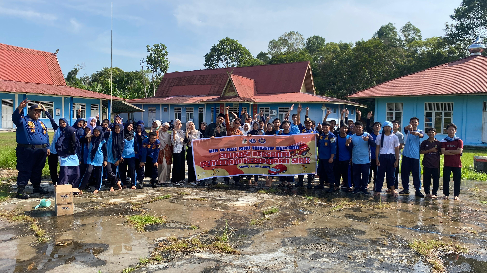

MA Al-Aziz Riau Tanggap Bencana — Edukasi Bersama Pemadam Kebakaran Siak
21 Juli 2025 | Admin
Siak — Madrasah Aliyah Al-Aziz Riau menggelar kegiatan "Edukasi Bersama Pemadam Kebakaran Siak" pada Senin, 21 Juli 2025 pukul 07.30 WIB di lingkungan sekolah. Kegiatan ini merupakan bentuk kepedulian sekolah dalam meningkatkan kesadaran dan kesiapsiagaan warga sekolah terhadap potensi bencana kebakaran.
Acara yang terbuka untuk umum dan gratis ini menghadirkan tim profesional dari Pemadam Kebakaran Kabupaten Siak, yang akan memberikan pengetahuan langsung mengenai pencegahan dan penanggulangan kebakaran, teknik pemadaman yang aman, serta langkah penyelamatan diri saat terjadi kebakaran.
Ketua Yayasan, M. Satria, SKM., M.Kes., menyampaikan bahwa kegiatan ini menjadi salah satu upaya nyata MA Al-Aziz Riau dalam membekali siswa, guru, dan masyarakat sekitar dengan keterampilan dasar tanggap bencana. "Kesadaran dan kesiapan menghadapi bencana sangat penting, apalagi kebakaran adalah salah satu risiko yang bisa terjadi kapan saja. Melalui edukasi ini, kami berharap semua peserta dapat memahami langkah-langkah tepat dalam menghadapinya," ujarnya.
Sementara itu, Kepala Madrasah, M. Fahrurrozi, S.Pd., menambahkan bahwa kolaborasi dengan Pemadam Kebakaran Siak menjadi momen berharga untuk belajar langsung dari ahlinya. "Kami ingin menciptakan lingkungan sekolah yang aman dan siap siaga. Edukasi seperti ini bukan hanya teori, tetapi juga praktik lapangan yang bermanfaat bagi semua," jelasnya.
Selain penyampaian materi, peserta juga akan mendapatkan kesempatan untuk melihat dan mencoba langsung peralatan pemadam kebakaran, serta simulasi pemadaman api yang dipandu oleh petugas berpengalaman.
Dengan diadakannya kegiatan ini, MA Al-Aziz Riau berharap dapat menumbuhkan budaya sadar bencana di kalangan pelajar dan masyarakat, sehingga mampu mengurangi risiko dan dampak kebakaran di masa mendatang.
Kembali ke Berita